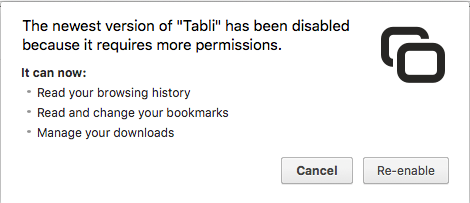

Changelog
- By popular request, I've added an option for a denser, more compact layout (similar to Tabli's pre-2.0 design) to show more tabs in less space. To enable: From the Tabli menu (☰) select "Preferences...> Layout > compact".
- The in-browser Tabli popup now automatically hides after switching to another window or tab.
- Put back the "Copy Window Summary" action inadvertently removed in 2.0.0 to copy a summary of open windows to the clipboard as Markdown text. Now on the Tabli menu (☰).
- Added a new "Tidy" operation to Tabli menu for minimizing all but the active browser window. Helpful for getting focused on one thing for a while on a cluttered multi-window desktop without restoring to a full screen browser window.
- A visual makeover -- more contrast and spatial separation between elements, better button graphics, minor alignment fixes, etc.
- Improved visual feedback when re-ordering or moving tabs using drag and drop.
- You can now mute tabs directly from Tabli. Click on the audio (speaker) icon on a tab when sound is playing to mute or unmute.
- This is the first release of Tabli since a fairly extensive overhaul of the internals earlier this year. While I've tested and used the newer implementation for months, it's possible something got missed. If you encounter issues or unexpected behavior, please use "Send Feedback" from the Tabli menu (☰) to send an email to tabli-feedback@gettabli.com to report it.
- By Popular Demand, Tabli now supports a Dark Mode Theme. Select preferred Theme (light or dark) via "Preferences..." on Tabli's menu button (☰).
- Tabli ❤️ The Great Suspender. A number of Tabli users also use The Great Suspender, an excellent Chrome extension that automatically suspends tabs you aren't using, freeing memory and CPU. This release of Tabli resolves a long-standing issue to ensure the correct icon and URL are shown for tabs suspended by the Great Suspender, and adds a little 💤 icon to indicate suspended tabs.
- You can now edit saved folder titles directly in Tabli - just click the pencil icon on the window header.
- Tabli now correctly moves saved tab state when you drag and drop saved tabs between saved windows.
- Fixed a sizing bug in the Tabli popup that hid the close button for a tab when audio was playing.
- Tabli now supports a limited form of tab de-duplication as an opt-in feature. To enable, open "Preferences..." and select "Automatically close duplicate tabs"
- By popular demand, Tabli now supports automatic synchronization of saved windows and tabs across computers logged in to the same Chrome profile.
- To improve performance, by default Tabli now only reloads saved tabs when re-opening saved windows. There is a "Preferences..." option to revert to the previous (slower) behavior of restoring all tabs.
- By popular demand, the Tabli Popout Window now has much better resize behavior so you can see those long tab titles and more window and tab summaries.
- The Tabli Popout Window now opens by default when you start Chrome. If for some reason you don't like this behavior there is a "Preferences..." option on the menu () to disable it.
- Minor Bug Fix: The 'Enter' (Open) keyboard shortcut now works when only the window title matches the search string.
- Tabli now uses the Chrome Sessions API when re-opening Saved Windows. This enables Tabli to restore the state of pinned tabs for those that use that feature of Chrome.
- Tabli no longer requests the 'Manage your Downloads' permission.
- Basic Session Management: When a Saved Window is closed and re-opened, Tabli will restore all
previously open tabs in that window. This works even after re-starting Chrome or if Chrome crashes. Of
course you can still use the revert button () to close all but your explicitly saved tabs (marked with a
 ) .
) .
- New keyboard shortcut: Press
;to expand or collapse the currently selected window summary. - If you open the Tabli Popout (by clicking
 ), it will remain open after
re-starting Chrome. If you have a large, high-resolution monitor I highly recommend using the Tabli
Popout.
), it will remain open after
re-starting Chrome. If you have a large, high-resolution monitor I highly recommend using the Tabli
Popout.
- When navigating with keyboard shortcuts, the selected window will scroll into view.
- Keyboard navigation now wraps: Up from top window moves to bottom of window list and vice versa.
New Features:
- Introducing: The Tabli Popout Window— an independent Tabli window that
updates as you browse. This provides a convenient, always-available view of all your
browser windows and tabs, especially useful on large, high resolution monitors.
Activate by clicking the popout
button () in the Tabli popup.
- Drag and Drop tab items in Tabli to move tabs between windows or re-order tabs within a window.
- Tooltips that show the full title and URL of each tab.
- Numerous bug fixes to address minor visual issues (like lingering visible-on-hover icons).
- Faster loading of FavIcons by using Chrome's built-in favicon cache, thanks to a contribution by John Bartel (@jonbo).
- Emacs-like keyboard shortcuts in addition to arrows (Ctrl-n, Ctrl-p / SHIFT-Ctrl-n/SHIFT-Ctrl-p to move to next/prev tab/window).
- A cleaned up toolbar.
Permissions Warning and Privacy:
Unfortunately, existing users of the previous version of Tabli were greeted with this somewhat alarming dialog from Google Chrome after Tabli was automatically updated from the Chrome web store:

This dialog is rather misleading in that the only new permission added to Tabli between the previous version (0.8.8) and the latest version (0.9.1) is the ability for Tabli to read Chrome's store of FavIcons ‐ the small icons that appear on the tab for each web site.
Tabli requests the permissions shown in the above dialog in order to perform its essential function. However: Tabli does not make any outbound data connections, and does not send any data whatsoever to any external application, extension or cloud service.
More detailed discussion may be found in the corresponding github issue.